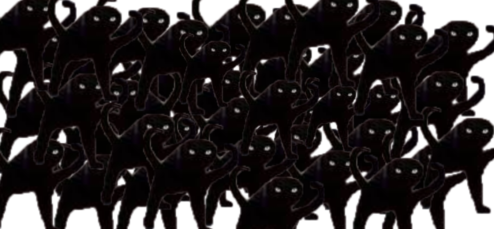
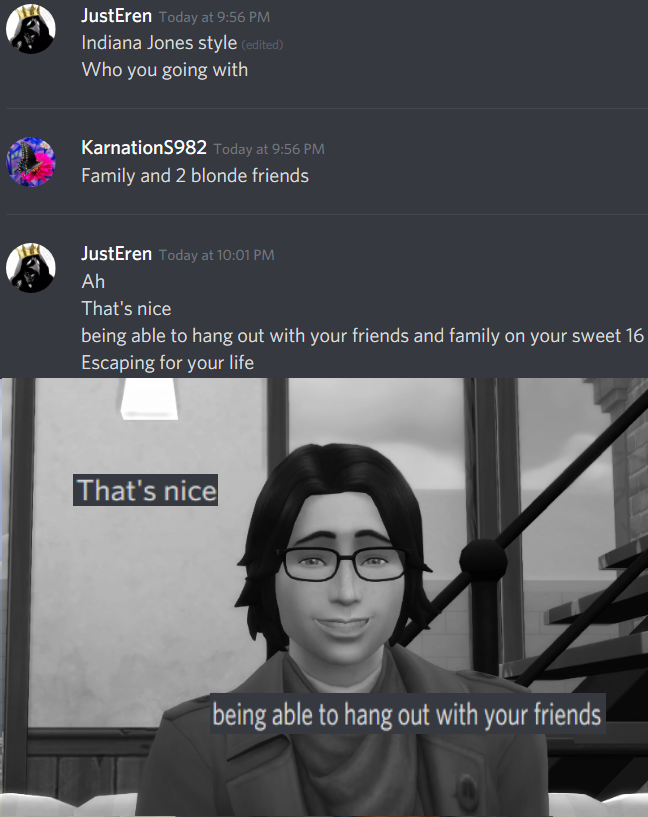
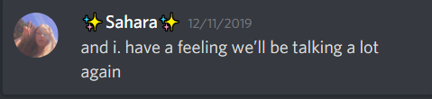
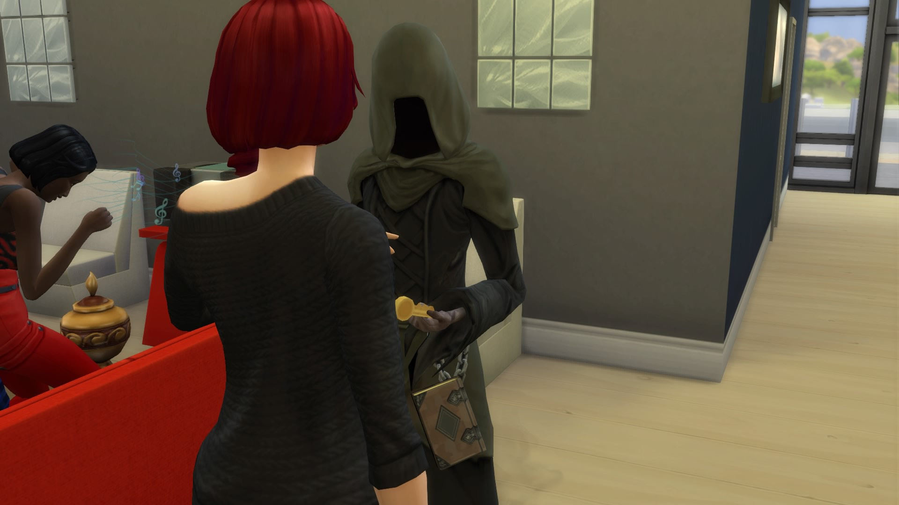
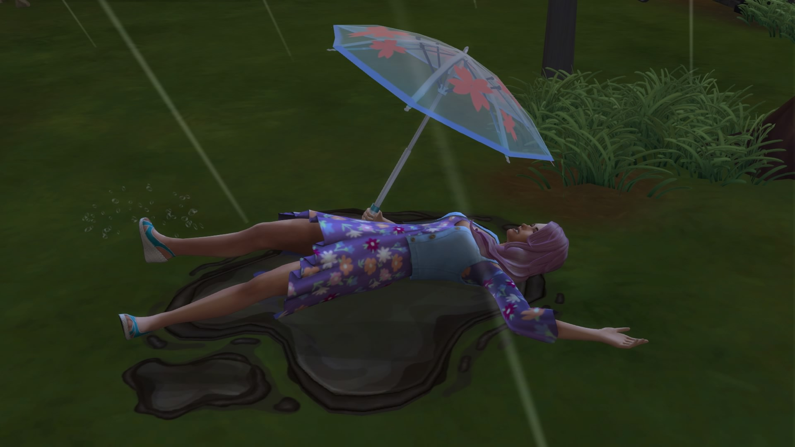
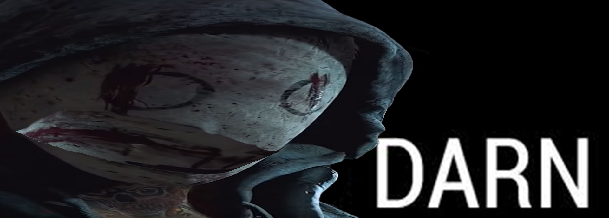
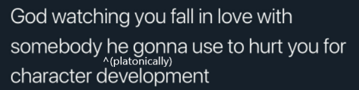

So, basically, I have all these thoughts and nobody to really share it to because it's usually retains to somebody and well, I can't tell them. Because they're busy. Essentially this will be an journal-esqe thing. Online for anybody can see, but nobody will bother to look at it.
Angry Cat Mob
So, rant, this one will be about Kaitlyn ig. One of the few major conversations we had was about our friendship. Some key takeaways from it was that Kaitlyn wished she could be a better friend and that we could hang out more often. Like, that's good that she obviously does care. But, her actions say otherwise. Many times she always says she's busy and that she's usually focused heavily on schoolwork. That's fine and all. What about when you have free time? hardly exists. Still, whenever you do get it, you'd think that she try to use that time to hang out with friends. Well yes but actually partially no. She seems to make the time to mainly hang out with Jessica and Simone. I don't think there was once a time where she had ever tried to make time to try and hang out in the past 7 months. The reason I say 7 is because she did try to invite me to WAW in summer. But aside from that she has never approached me about making a plan. That's a topic for another time. Anyways, my point being is that she never seems to really care or at least shows that she wants to or tries to hang out. The most recent example is her birthday. She had her family, and guess who, simone and jessica for her birthday escape room thing. I mean it's fine if I wasn't invited but I wished she'd at least say why she didn't invite me considering the big oppurtunity to invite friends to hang out and there's no way that anything will cancel it or busy schedule would coincide. I'll get more into the birthday thing later as well. As much as it seems, I still wish to be friends with Kaitlyn, just wish I wasn't the only one putting a lot of effort. She has never really messaged me first aside from response.
happy birthday Kait
Sahara is another topic ig. She was one of my close online friends albeit weird. It's been about 2 years since we last spoke which is a long time and just last month. She suddenly messaged me on Disc. Talk about a surprise huh. Anyways, it was awkward since we haven't spoken in a long while. We eventually got used to it and we talk every now and then. That was also a month ago. As of recent terms, she's never been on as she's focused almost entirely with her relationship with her girlfriend (yes, gay). Like you know it's bound to happen. It's hard to balance out friendships and relationships but, with another wishful statement? It seems that everybody is saying them to me at this point. Look at that picture below.
Ironic, we were so psyched to finally be talking again, and now she's just... gone again. Caught up with personal affairs. Talk about suckish. I've had more of a singular conversation with her girlfriend while she was drunk then Sahara herself in the past few weeks. Her girlfriend is also she really talks about 90% of the time. mh.
You heard the term "Death's Door" but Valentine pulled a reverse card on Death himself. "Val's Door". Just not the same ring.
Rhea? Rhea? Oh my gosh she dead.
When your close friends keep leading you on with wishful thinking only to bring you down last minute (incidental with no ill intentions but still tho)
:(